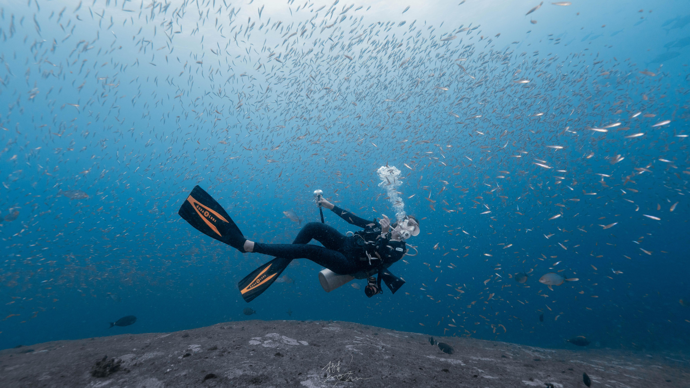
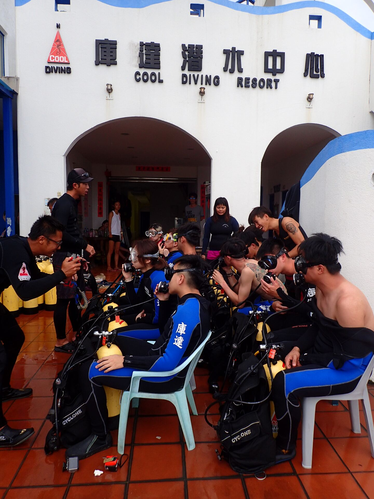
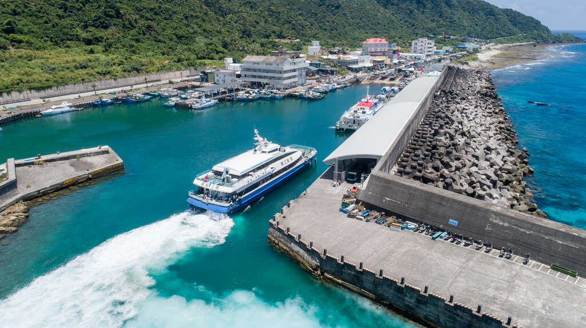
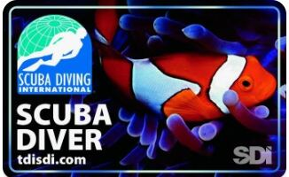
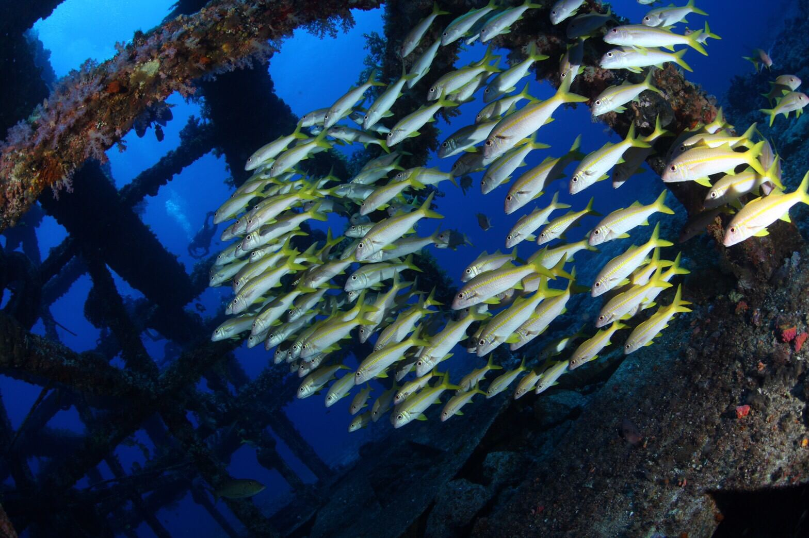
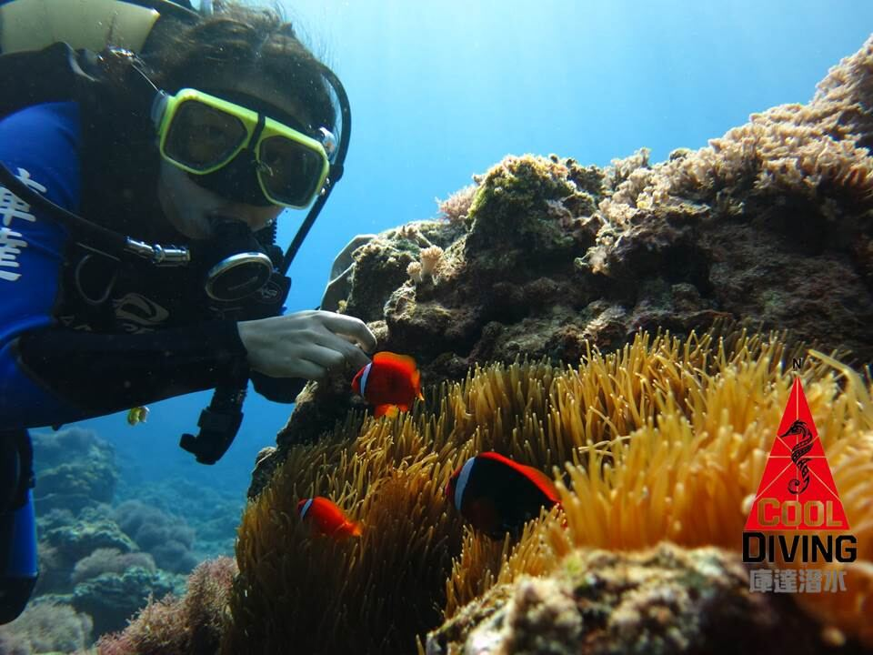
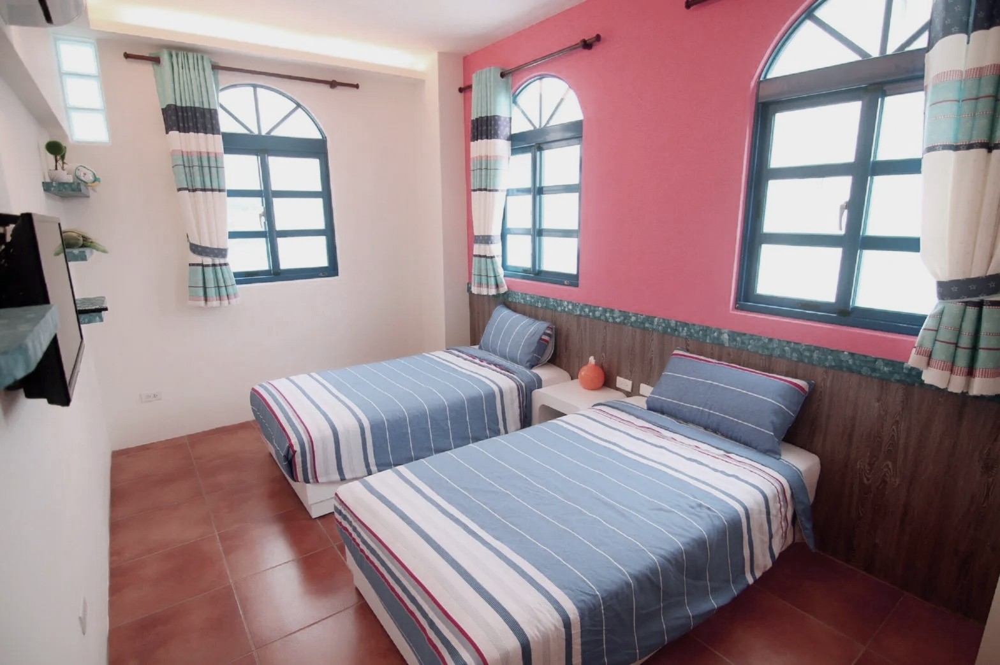

Option A · Backpacker
BACKPACKER ROOM
背包房 · 多人共住一室，預算友善之選
共用空間冷氣獨立衛浴三晚
NT$18,000/ 每人

Course · 課程大綱

* 健康問卷 - 身體健康適宜作水肺潛水活動 ↗

Itinerary · 上午登島 → 下午泳池課

泳池深度 1.5 M — 在全程可控的環境中完成所有技巧確認，為次日開放水域建立信心基礎。

Itinerary · Open Water 1 & 2

完成後進行裝備保養與 De-brief，晚間理論複習確認次日課程知識。


Itinerary · Open Water 3 & 4

石朗與大白沙能見度優秀，珊瑚礁地形豐富 — 認證潛水同時也是最精彩的一天。

Itinerary · 上午補考(預留) → 下午離島

補考時間預留至上午 11:00 — 若有需要，教練會陪同進行技巧或知識補考，確保每位學員順利取得認證。
綠島島上民宿三晚住宿，雙人房或背包房二擇一，全程含早。

一次費用，包含證照、交通、島上機動性與住宿。
PADI Open Water Diver 全套課程教材、教練費、潛水裝備與認證費用。
富岡漁港 ⇄ 綠島南寮漁港 來回客船船票，依出航狀況彈性調整。
三天兩夜島上機車租借，課程通勤與自由探島皆方便。
於合法民宿入住三晚，可選雙人房或背包房，住宿含早。